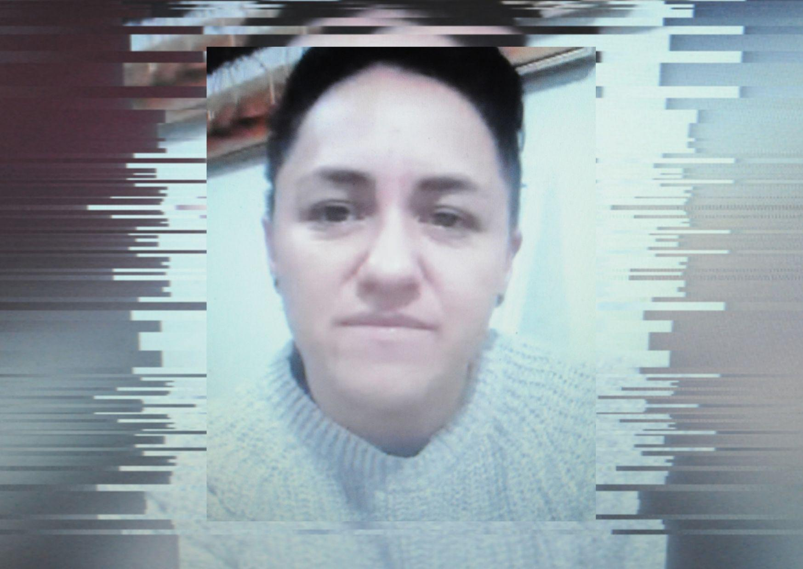
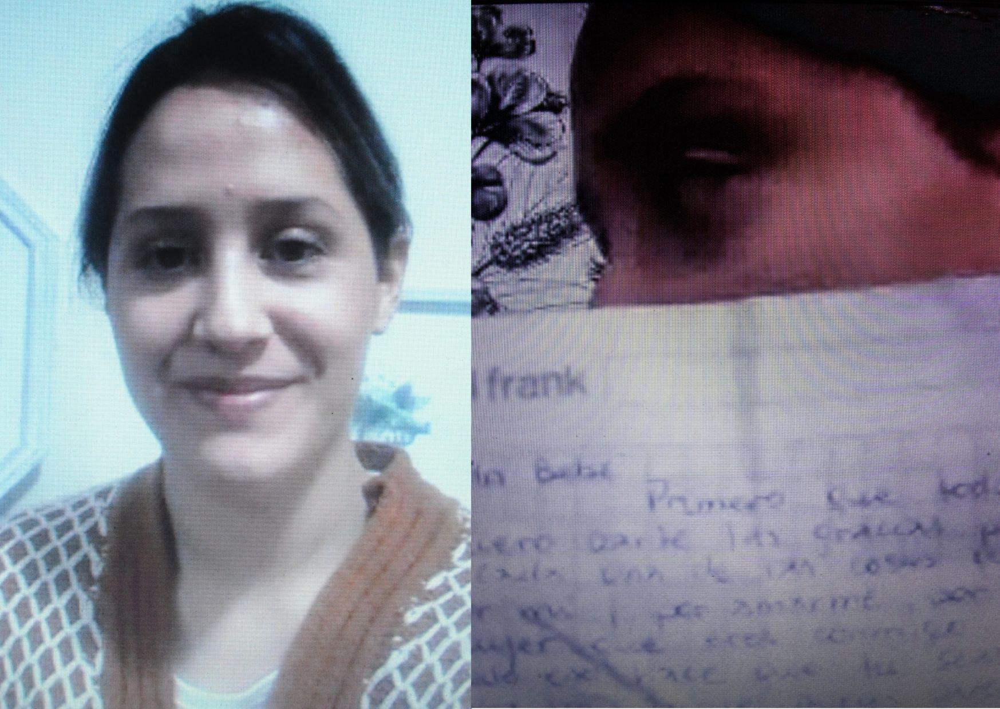
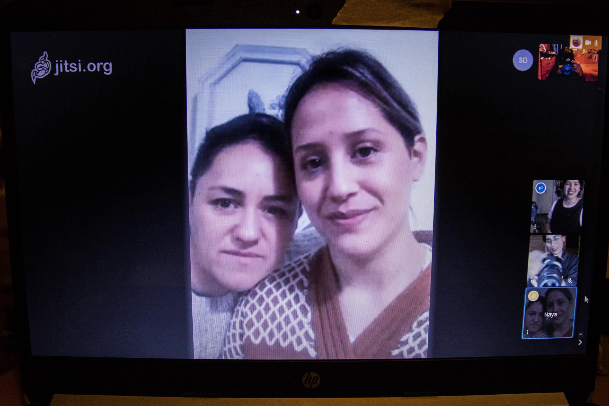

No hubo control de identidad. Una tarde de noviembre, cuatro funcionarios de la PDI la encañonaron junto a su pareja en pleno centro de Concepción. Una detención irregular no sólo la llevó a perder su trabajo, sino que también a sufrir la violencia lesbofóbica por parte de las policías de Chile.

“Cuando logras salir, nada vuelve a ser lo mismo. Yo salí de la cárcel y no tengo nada de lo que tenía antes de que pasara este chasco”, confiesa Karen (37).
El jueves 21 de noviembre, ella y su pareja Nayareth salieron a marchar desde la Plaza Lautaro, ahora ex Plaza Independencia de Concepción. Eran las 19.30 cuando pidieron un uber para irse, pero cuando Karen abre la puerta, aparecen dos autos de civil desde el que descendieron los oficiales vestidos de negro que usaban el chaleco antibalas de la PDI.
Pese a que señala que no pondrían resistencia, las subieron al auto entre golpes y se las llevaron sin ninguna explicación.
Procedimiento negligente
Después de constatar lesiones, en el cuartel fue todo muy confuso. No sabían qué causa poner al parte policial. En primera instancia se les acusó de robo en lugar no habitado, pero en la mañana lo cambiaron a receptación. En eso, las hicieron desnudarse en la oficina frente a varios funcionarios. Karen reclamó por la falta de una mujer supervisando, pero le reprocharon: “¿Y tú no te crees hombre?”.

Casi a las 11 de la noche unos oficiales preguntaron a viva voz: “¿Quién se quiere hacer cargo del bolso?”. Nayareth recuerda que cuando llegaron al cuartel, tenían un montón de zapatos de niño dispuestos en el mesón. Supuestamente, todos venían del bolso del que estaban hablando antes.
Karen presentó las marcas de un moretón en la espalda y en el glúteo como prueba ante la Fiscalía, pero le bajaron el perfil. De hecho, no hubo registro del hematoma.
Cuando Nayareth salió del juzgado, a Karen la dejaron en prisión preventiva. En un ejercicio de memoria, comenzó a recordar todos los detalles de la detención. Se contactó con algunes testigues y las fotógrafas que conocieron unos momentos antes.
Sin embargo, esa no fue la única vez que sufrió de violencia de género. Unos meses después, cuando la dejaron con arresto domiciliario total, se ofrecieron a sacar la basura del edificio, pero justo pasó un retén móvil que andaba con su fotografía y la increparon por estar fuera de su residencia.
Karen asegura que estaba a tan sólo quince pasos de su casa. Entre dos carabineros le dicen que se suba, ella les explica que vive ahí, que firma todos los días en ese mismo lugar, pero igual la golpearon para ponerle las esposas. Volvió a reclamar por la ausencia de una funcionaria.
Su detención fue a las ocho de la tarde y la soltaron a las cuatro de la madrugada, en pleno toque de queda, asegurando que recién había llegado la orden del fiscal. Nayareth cuenta que el abogado, les dijo que la libertad probablemente llegó antes, pero Carabineros la dejó ahí como castigo.
Una separación forzada
Para Nayareth fue un proceso demasiado difícil al no contar con redes de apoyo familiar. Entre ambas son más que sólo una pareja, son compañeras y amigas.

“Desde que se llevaron a la Karen detenida fueron tres meses de puro sufrimiento. No dormía, empecé con crisis de angustia. Estuve muchas veces en el hospital y con psicólogo. Incluso perdí mi trabajo”, cuenta Nayareth.
El apoyo de los colectivos feministas fue vital. Se incorporaron al movimiento y lograron armar redes. Karen siempre tuvo la esperanza de salir y debía mantenerse fuerte porque afuera la estaban esperando, pero era difícil soportar las reglas de los gendarmes y vivir con el olor a baño en el dormitorio y en el comedor.
Mientras las deudas se venían encima, Karen seguía encerrada. Ella relata que las condiciones en la cárcel eran precarias:
-“Yo viví en un dormitorio pequeño donde dormíamos nueve personas en tres literas. Teníamos hasta los mismos sueños de tan juntas que estábamos. Es un ambiente tóxico, todas fuman. No tienes privacidad, ni espacio para llorar tranquila. Obviamente no es culpa de la gente, sino del Estado que tiene las cárceles de esa forma”.